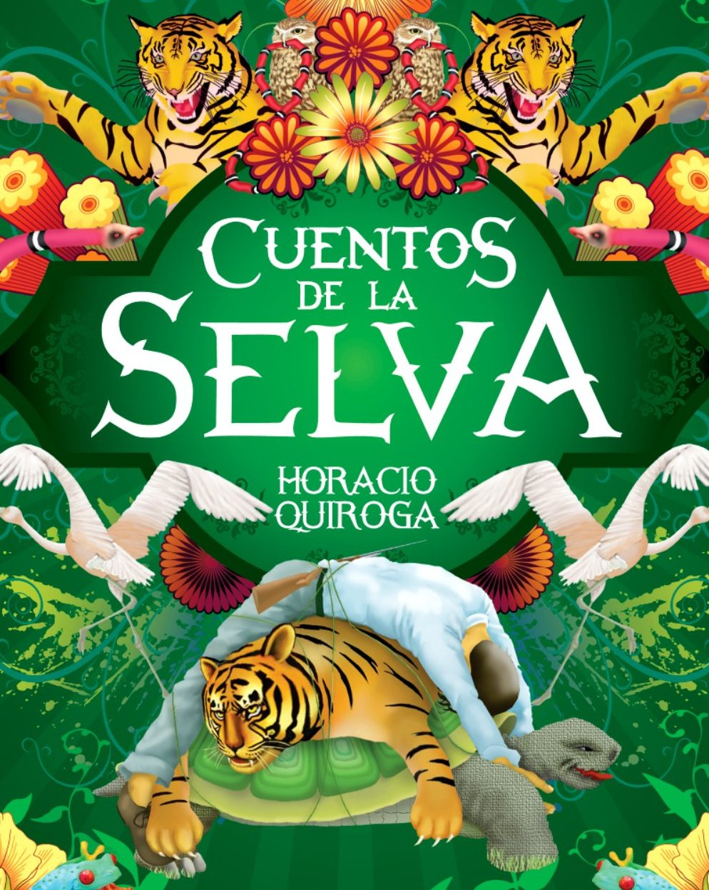

Libro: Cuentos de la selva
Autor: Horacio Quiroga
INDICE
La tortuga gigante
Las medias de los flamencos
El loro pelado
La guerra de los yacarés
La gama ciega
Historia de dos cachorros de coatí y de dos cachorros de hombre
El paso del Yabebirí
La abeja haragana
Biografia
Publicado en 1978, Bs. As, Argentina
|
PDF
